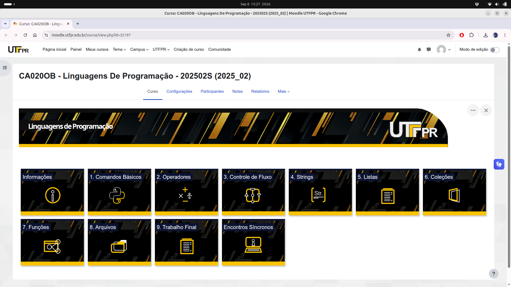
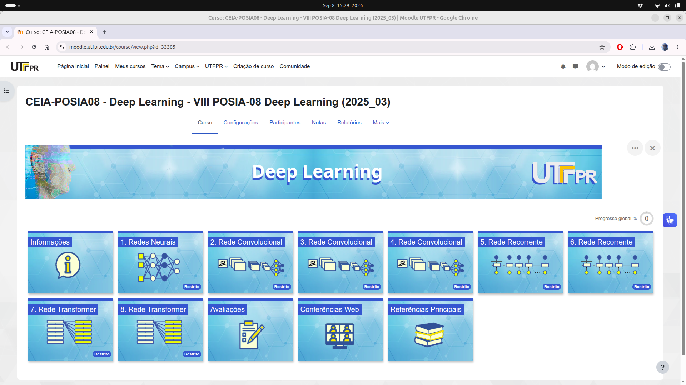
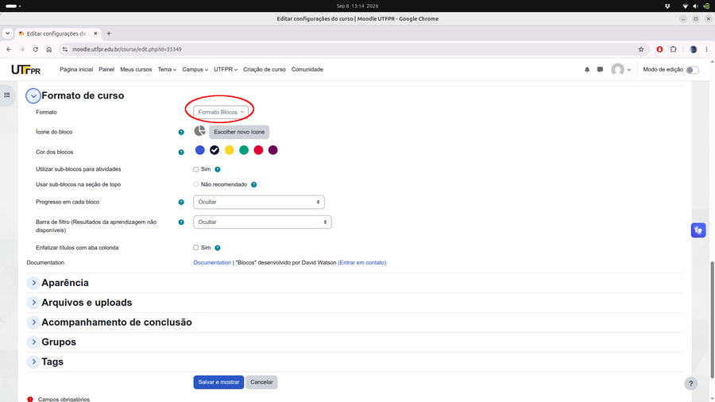

Visual moderno com Formato Blocos


Para deixar o visual moderno e equilibrado, use a navegação por blocos temáticos:
Aqui você pode definir a cor dos blocos, deixando alinhado com a identidade visual da instituição ou da área do conhecimento.
